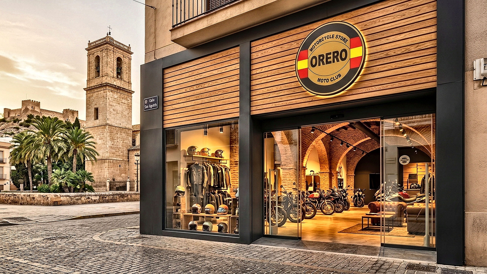
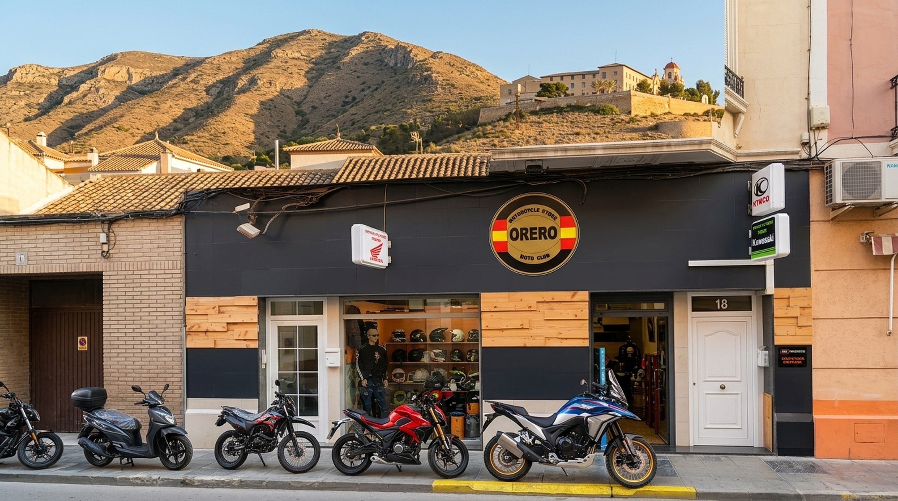
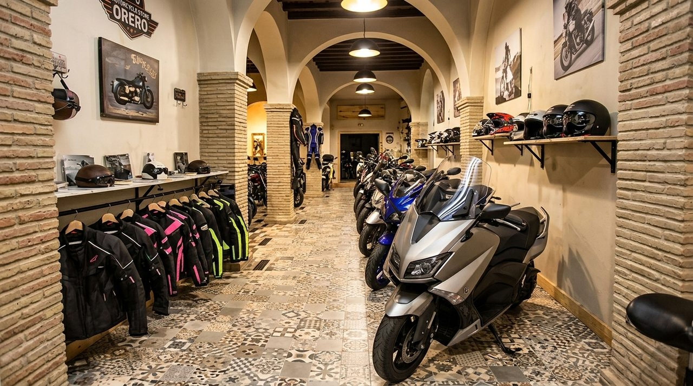

OPCIÓN 1 · ELEGIDA ⭐ 🏍️ Perspectiva a pie de Calle San Agustín con Motos en Acera Calle San Agustín 18 ACTIVA EN LA WEB
La imagen elegida: Vista real a pie de calle mirando hacia la entrada de Orero Motorcycles en Calle San Agustín 18. La hilera de motocicletas reales aparcadas en el bordillo (trail adventure azul/blanco con llantas doradas, naked deportiva roja, supermotard negra y scooters), el concesionario real con sus rótulos oficiales a la derecha y la perspectiva de la histórica Calle San Agustín de Orihuela a la izquierda. En auténtica resolución 4K UHD ultra-nítida (3840 × 2160).

OPCIÓN 2 🛡️ Fachada Orero Moto Club & Castillo 4K Escudo Oficial + Paneles Madera + Castillo 4K
Fachada exterior moderna con el escudo oficial circular de Orero Moto Club (con la bandera de España), paneles de madera noble de pino, cristaleras diáfanas con boutique de cascos y showroom interior de motos expuestas, y la torre y castillo de Orihuela de fondo al atardecer.

OPCIÓN 3 🏬 Su Local Real + Monumental Seminario de Orihuela Fondo Emblemático Orihuela Local 100% Auténtico
La fachada real de Orero Motorcycles en Calle San Agustín 18 con su rótulo circular de Orero Moto Club, paneles de pino, placas de Kawasaki, Honda y Kymco, puerta nº 18, taller y motos reales aparcadas. De fondo, la auténtica Sierra de Orihuela y el histórico Seminario Diocesano de San Miguel.

OPCIÓN 4 🏁 Showroom Interior Real · Exposición con Arcos de Piedra Interior Real de la Tienda
El interior auténtico de Orero Motorcycles: arcos tradicionales de piedra de Orihuela, suelo hidráulico, pasillo central con exposición de motocicletas revisadas, boutique de equipamiento y cascos al fondo.
